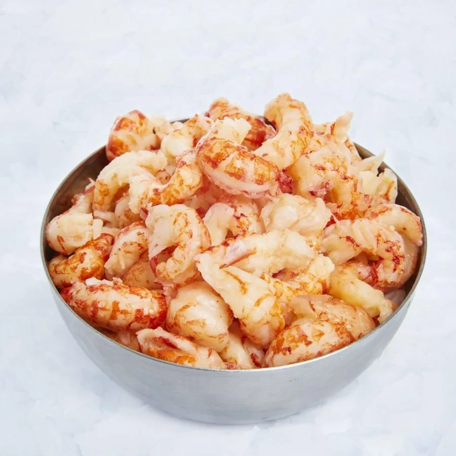

Comment y faire face a notre echelle
Dotée d’une grande adaptabilité, omnivore et opportuniste, l’Ecrevisse de Louisiane entre en interaction avec les amphibiens sous différentes formes : prédation, agressivité, compétition, etc. Au-delà des dommages portés aux espèces natives, l’espèce endommage les berges et impacte le fonctionnement des écosystèmes qu’elle colonise, en conduisant à un équilibre précaire caractérisé par le repli des communautés végétales et des macro-invertébrés. Il est donc nécessaire d’assurer la coexistence des espèces natives avec l'Écrevisse de Louisiane jusqu’à son extinction. La lutte contre cette espèce exotique envahissante s’articule ainsi autour de plusieurs moyens :
- - Maintenir des refuges pour les espèces natives
- - Éradiquer les individus présents
- - Eviter les nouvelles introductions
- - Sensibiliser les habitants et usagers
